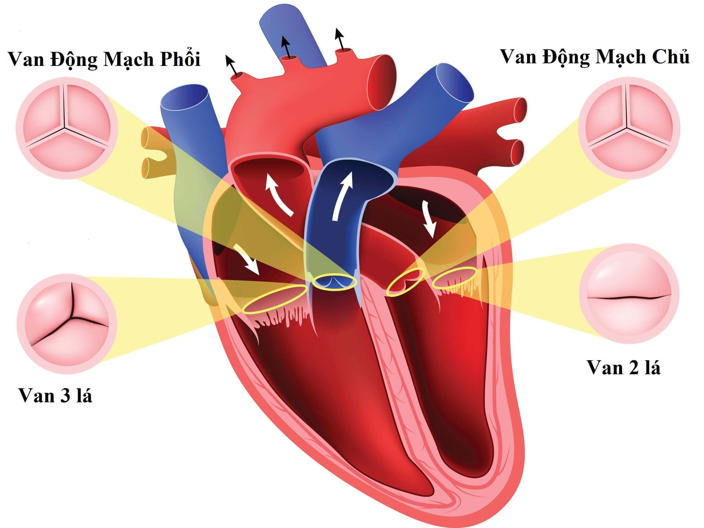
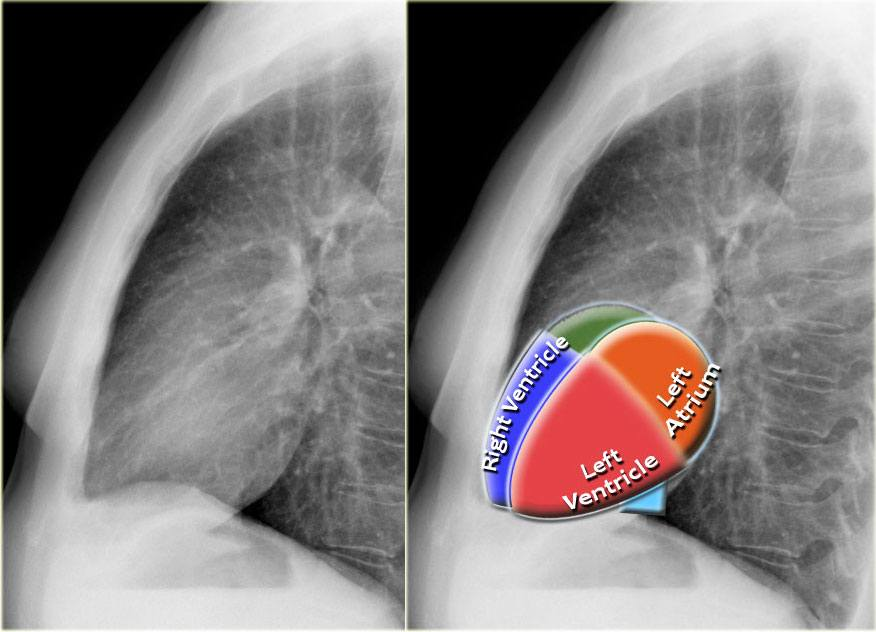
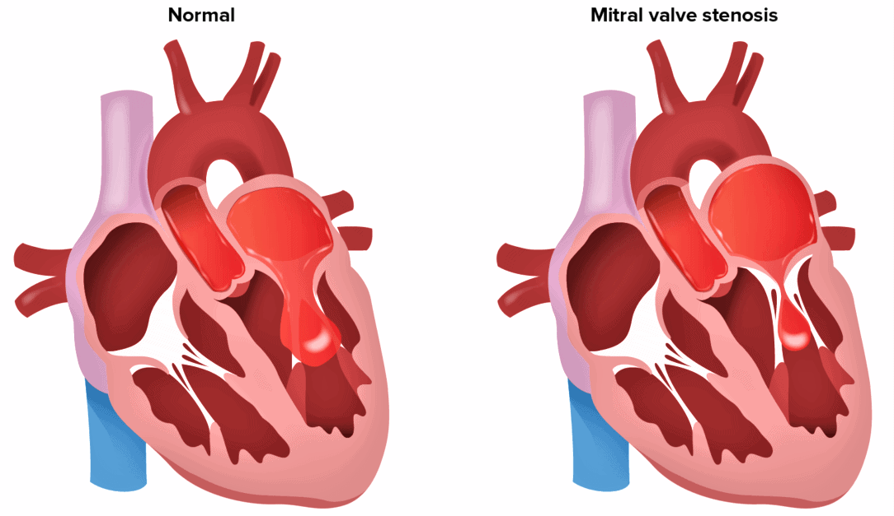
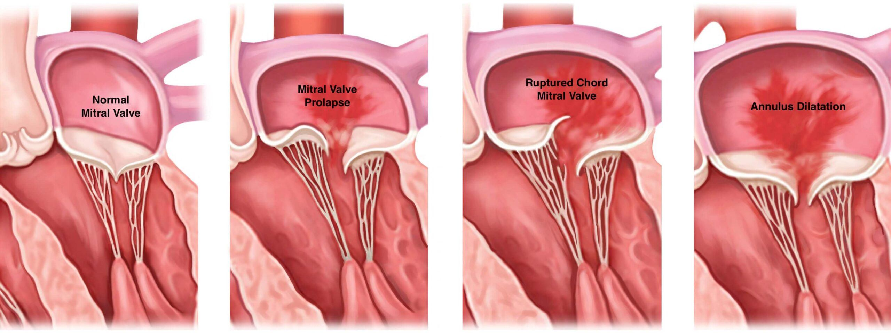
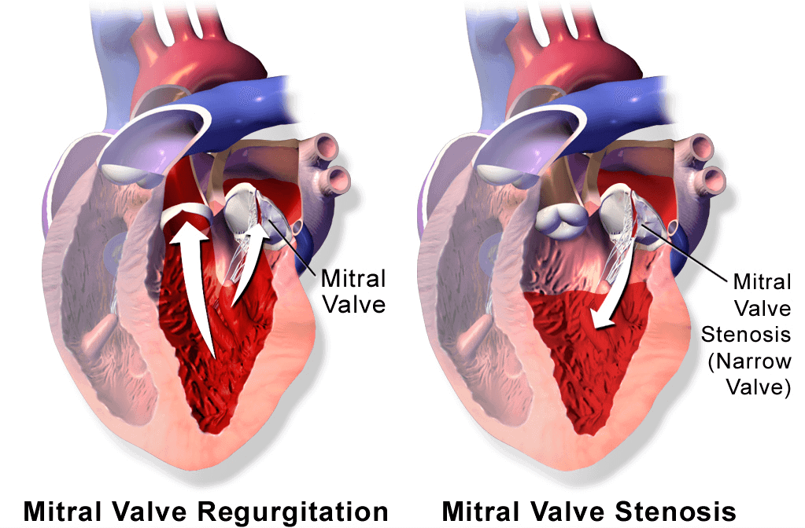
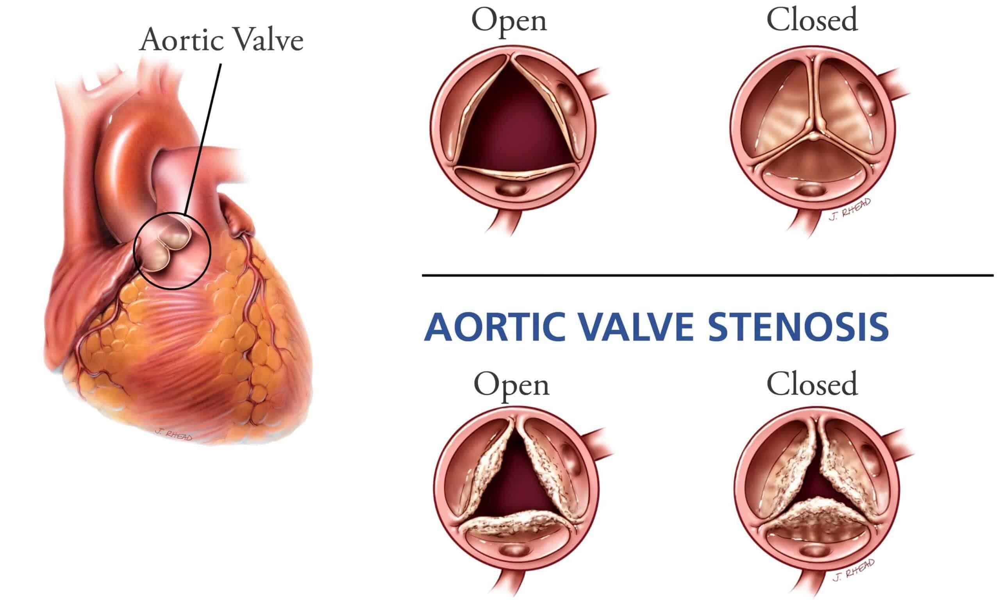
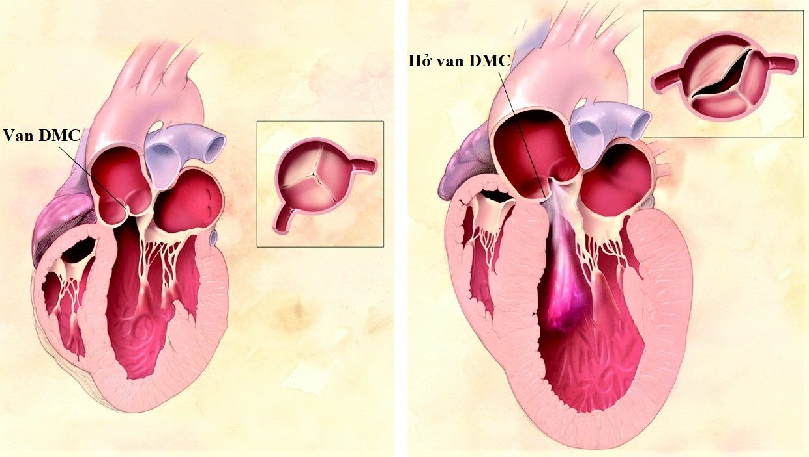
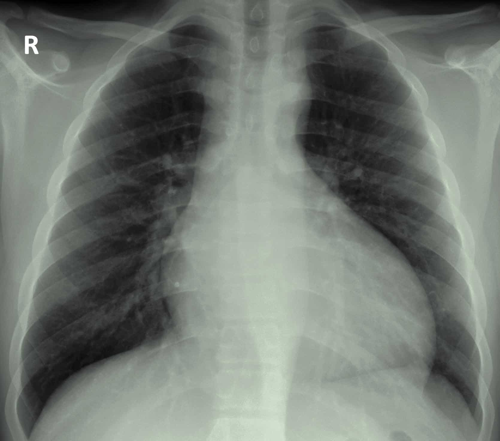

Bệnh Tim Mắc Phải
I. Đại cương
– Bệnh van tim mắc phải là bất thường cấu trúc hoặc chức năng của một hay nhiều van tim xuất hiện sau sinh, gây hẹp, hở hoặc phối hợp cả hai; sa van có thể gây hở van.
– Dịch tễ: Tần suất và căn nguyên thay đổi theo tuổi và khu vực:
+ Bệnh van thoái hóa, vôi hóa thường gặp hơn ở người cao tuổi.
+ Bệnh van do thấp tim vẫn là nguyên nhân quan trọng ở nhiều khu vực.
– Nguyên nhân: Các căn nguyên thường gặp gồm:
+ Thoái hóa, vôi hóa van và thấp tim.
+ Viêm nội tâm mạc nhiễm khuẩn.
+ Bệnh lý mô liên kết hoặc gốc động mạch chủ.
+ Rối loạn chức năng van thứ phát do giãn vòng van hoặc tái cấu trúc buồng tim.
– Cơ chế bệnh sinh: Bình thường, các van tim đóng mở theo chu kỳ tim, duy trì dòng máu chảy một chiều:
+ Hẹp van cản trở dòng máu xuôi chiều, làm tăng áp lực ở buồng tim phía trước chỗ hẹp và có thể cản trở đổ đầy hoặc tống máu.
+ Hở van gây dòng máu phụt ngược, làm tăng gánh thể tích ở buồng nhận dòng phụt ngược và có thể làm giảm cung lượng tim hiệu quả.
+ Quá tải áp lực hoặc thể tích kéo dài gây phì đại, giãn buồng tim và rối loạn chức năng tim; tăng áp lực đổ đầy có thể dẫn đến ứ huyết phổi hoặc tĩnh mạch hệ thống, còn giảm cung lượng tim có thể gây giảm tưới máu cơ quan.
– Biểu hiện lâm sàng: Bệnh có thể không triệu chứng trong giai đoạn còn bù; khi tiến triển, người bệnh có thể khó thở, giảm khả năng gắng sức, mệt, hồi hộp, đau ngực, ngất hoặc phù, tùy van tổn thương và mức độ rối loạn huyết động.
– Phân bố: Bệnh có thể ảnh hưởng một hoặc nhiều van:
+ Van ba lá nằm giữa tâm nhĩ phải và tâm thất phải; van động mạch phổi nằm giữa tâm thất phải và động mạch phổi.
+ Van hai lá nằm giữa tâm nhĩ trái và tâm thất trái; van động mạch chủ nằm giữa tâm thất trái và động mạch chủ.
+ Bệnh van bên trái thường gặp hơn trong nhiều nhóm bệnh van mắc phải; tổn thương van bên phải có thể là nguyên phát hoặc thứ phát do bệnh tim trái, tăng áp phổi, viêm nội tâm mạc hay dây điện cực trong tim.
– Vai trò CĐHA:
+ Siêu âm tim là phương tiện chính để đánh giá cấu trúc van, mức độ hẹp hoặc hở và hậu quả huyết động.
+ CT và MRI tim bổ sung đánh giá giải phẫu, vôi hóa, thể tích và chức năng buồng tim, đồng thời hỗ trợ lập kế hoạch can thiệp khi phù hợp.
+ X-quang ngực có thể cho thấy biến đổi bóng tim và tuần hoàn phổi do bệnh van, nhưng không xác định tin cậy tổn thương van hoặc mức độ hẹp, hở.

© Chẩn Đoán Hình Ảnh Xray.vn
II. Giải phẫu
1. Giải phẫu x-quang
– Tư thế chụp thẳng sau trước (PA): Trên phim chỉ thấy bờ ngoài bóng tim, không phân biệt trực tiếp từng buồng tim:
+ Tâm nhĩ trái (Left atrium) nằm chủ yếu ở phía sau, nhận máu từ các tĩnh mạch phổi đi vào gần như theo phương ngang.
+ Tiểu nhĩ trái đôi khi tạo đoạn lồi nhỏ ngay dưới thân động mạch phổi, rõ hơn trên phim nghiêng.
+ Giãn nhĩ trái có thể làm lồi bờ tim trên-phải và mở rộng góc carina do hai phế quản chính tách xa nhau.
+ Tâm nhĩ phải (Right atrium) nhận máu từ tĩnh mạch chủ trên và tĩnh mạch chủ dưới, tạo phần lớn bờ tim phải.
+ Giãn nhĩ phải làm bờ tim phải lồi và dịch ra ngoài.
+ Tâm thất trái (Left ventricle) nằm lệch trái, ở phía sau tâm thất phải, tạo phần dưới bờ tim trái và mỏm tim.
+ Giãn thất trái làm bờ tim trái lồi, mỏm tim thường lệch xuống dưới và sang trái.
+ Tâm thất phải (Right ventricle) nằm trước nhất, ngay sau xương ức; trên phim PA thường chồng hình lên bóng tim, không tạo bờ ngoài rõ.
+ Giãn thất phải có thể đẩy bóng tim sang trái; chỉ khi giãn nặng, thất phải mới có thể góp phần tạo bờ tim trái.

– Tư thế chụp nghiêng:
+ Tâm nhĩ trái (Left atrium) tạo phần trên của bờ sau tim.
+ Giãn nhĩ trái làm lồi phần trên của bờ sau tim.
+ Tâm thất trái (Left ventricle) tạo phần dưới của bờ sau tim.
+ Giãn thất trái làm lồi phần dưới của bờ sau tim và đẩy bờ sau tim ra sau.
+ Tâm thất phải (Right ventricle) nằm ngay sau xương ức; phần thấp của khoảng sáng sau xương ức được giới hạn bởi mặt trước thất phải.
+ Giãn thất phải làm mất dần khoảng sáng sau xương ức, thường từ dưới lên khi thất phải lớn dần.

* Tư thế thẳng


* Tư thế nghiêng


2. Giải phẫu CLVT


III. Chẩn đoán hình ảnh
1. Hẹp van 2 lá
– Hẹp van hai lá (Mitral valve stenosis) do thấp tim vẫn là bệnh cảnh thường gặp ở Việt Nam; gánh nặng bệnh van do thấp tim đã giảm tại nhiều nước thu nhập cao.
– Cơ chế bệnh sinh: Hẹp van cản trở dòng máu từ tâm nhĩ trái xuống tâm thất trái trong thì tâm trương:
+ Diện tích lỗ van hai lá bình thường khoảng 4–6 cm².
+ Khi diện tích lỗ van giảm, chênh áp tâm trương giữa tâm nhĩ trái và tâm thất trái tăng; mức chênh áp còn phụ thuộc lưu lượng qua van và tần số tim.
+ Diện tích lỗ van hai lá ≤ 1,5 cm², kết hợp với các yếu tố lâm sàng, gợi ý hẹp van có ý nghĩa nặng.
+ Áp lực tâm nhĩ trái tăng truyền ngược lên hệ tĩnh mạch phổi, gây ứ huyết phổi và có thể dẫn đến tăng áp động mạch phổi.
– Tiên lượng: Bệnh thường tiến triển chậm, có thể không triệu chứng trong nhiều năm trước khi xuất hiện triệu chứng hoặc biến chứng:
+ Khi xuất hiện tăng áp phổi nặng, tiên lượng xấu; các tổng quan về diễn tiến tự nhiên ghi nhận thời gian sống trung bình khoảng 3 năm.
+ Trong các số liệu lịch sử ở nhóm không điều trị, nguyên nhân tử vong được ước tính gồm suy tim hoặc ứ huyết phổi tiến triển (60–70%), thuyên tắc hệ thống (20–30%), nhồi máu phổi (khoảng 10%) và nhiễm trùng (1–5%).

* Nguyên nhân:
– Bệnh van hai lá do thấp tim: Là căn nguyên thường gặp nhất trên toàn cầu; tỷ lệ có thể khoảng 50% ở một số quần thể.
– Hẹp van thoái hóa: Vôi hóa vòng van hai lá có thể lan vào lá van, hạn chế vận động van và thường gặp ở người cao tuổi.
– Căn nguyên hiếm: Một số nguyên nhân ít gặp khác gồm:
+ Viêm nội tâm mạc nhiễm khuẩn; sùi lớn có thể gây tắc nghẽn lỗ van.
+ Bệnh lý viêm hoặc thuốc.
+ Hội chứng carcinoid; tổn thương van hai lá do carcinoid rất hiếm.
– Cạm bẫy: U nhầy nhĩ trái không phải căn nguyên của hẹp van hai lá; khối u có thể gây tắc dòng máu qua van và mô phỏng hẹp van về mặt huyết động.
* Chẩn Đoán Hình ảnh
– Hẹp nhẹ: Phim X-quang ngực có thể bình thường, chưa thấy tim to hoặc biến đổi rõ phân bố mạch máu phổi.
– Giãn nhĩ trái: Trên phim thẳng PA, giãn nhĩ trái có thể tạo các dấu hiệu sau:
+ Dấu hiệu bờ đôi (double-density sign) ở đoạn giữa-dưới bờ tim phải do bờ nhĩ trái hiện ra phía trong bờ nhĩ phải; khi nhĩ trái giãn nhiều, bóng nhĩ trái có thể vượt ra ngoài bờ nhĩ phải.
+ Tiểu nhĩ trái giãn làm lồi cung tiểu nhĩ ở bờ tim trái, giữa cung động mạch phổi và bờ thất trái.
– Tăng áp tĩnh mạch phổi:
+ Tái phân bố mạch máu phổi lên thùy trên, rõ hơn trên phim chụp tư thế đứng.
+ Phù mô kẽ có thể làm xuất hiện các đường Kerley, thường gặp nhất là đường B; đường A và C ít gặp hơn.
– Tăng áp động mạch phổi: Đoạn động mạch phổi chính và các nhánh trung tâm giãn, trong khi các nhánh ngoại vi thưa nhỏ dần; tăng áp phổi kéo dài có thể gây tăng gánh và giãn thất phải.
– Phù phổi: Mức độ tăng áp lực tĩnh mạch phổi quyết định biểu hiện mô kẽ hay phế nang:
+ Phù mô kẽ có thể biểu hiện bằng dày quanh phế quản, dày khe liên thùy và đường Kerley.
+ Phù phế nang thường tạo các đám mờ hai bên, ưu thế quanh rốn phổi.
– Hemosiderosis phổi: Tăng áp tĩnh mạch phổi kéo dài có thể gây vi xuất huyết phế nang tái diễn, tạo đại thực bào chứa hemosiderin; trên phim có thể thấy các đám mờ lưới-nốt, đôi khi ưu thế ở vùng giữa và đáy phổi.
– Thất trái: Giảm lượng máu đổ đầy có thể làm thất trái không giãn hoặc có thể tích nhỏ; kích thước trên X-quang chỉ phản ánh gián tiếp thể tích thất trái.
– Vôi hóa: Có thể thấy vôi hóa van hoặc vòng van hai lá; hiếm hơn là vôi hóa thành nhĩ trái, tạo đường viền cong quanh bóng nhĩ. Vôi hóa tiểu nhĩ trái có thể đi kèm huyết khối; CT giúp xác định vị trí vôi hóa.
– Dấu hiệu Walking man: Trên phim PA, nhĩ trái lớn có thể đẩy phế quản gốc trái lên cao; trên phim nghiêng, phế quản gốc trái bị đẩy ra sau, tạo hình ảnh Walking man. Đây là dấu hiệu giãn nhĩ trái, không đặc hiệu riêng cho hẹp van hai lá.


=> Case lam sàng 1:
2. Hở van 2 lá
– Hở van hai lá (Mitral valve regurgitation) là tình trạng van không đóng kín trong thì tâm thu:
+ Bình thường, van mở trong thì tâm trương để máu từ nhĩ trái xuống thất trái, rồi đóng trong thì tâm thu.
+ Khi hở, một phần máu phụt ngược từ thất trái lên nhĩ trái thay vì được tống ra động mạch chủ, làm giảm thể tích tống máu xuôi dòng.
– Cơ chế bệnh sinh: Hậu quả huyết động phụ thuộc mức độ hở, tốc độ khởi phát và khả năng bù trừ:
+ Hở mạn gây quá tải thể tích nhĩ trái và thất trái; giãn, tái cấu trúc buồng tim ban đầu giúp duy trì cung lượng tim, nhưng về lâu dài có thể dẫn đến rối loạn chức năng thất trái và suy tim.
+ Hở cấp nặng làm áp lực nhĩ trái tăng nhanh khi buồng tim chưa kịp giãn, có thể gây ứ huyết phổi và phù phổi cấp.

* Nguyên nhân:
– Hở van hai lá nguyên phát: Do tổn thương cấu trúc của bộ máy van:
+ Thoái hóa van gây sa lá van; đứt dây chằng gân có thể làm lá van sa nhiều hoặc mất áp sát.
+ Bệnh van do thấp tim gây dày, co rút lá van và tổn thương dây chằng; có thể phối hợp hẹp van.
+ Viêm nội tâm mạc nhiễm khuẩn có thể phá hủy hoặc gây thủng lá van, đứt dây chằng gân.
+ Nhồi máu cơ tim có thể gây đứt cơ nhú, dẫn đến hở van cấp tính nặng.
+ Bệnh mô liên kết như hội chứng Marfan có thể gây sa lá van.
– Hở van hai lá thứ phát (chức năng): Do biến đổi hình học buồng tim làm giãn vòng van, dịch chuyển cơ nhú hoặc kéo căng lá van, khi không có tổn thương nguyên phát rõ của bộ máy van:
+ Bệnh cơ tim giãn hoặc thiếu máu cục bộ cơ tim có thể gây giãn, rối loạn chức năng thất trái và kéo căng lá van.
+ Giãn nhĩ trái, thường liên quan rung nhĩ hoặc suy tim phân suất tống máu bảo tồn, có thể gây giãn vòng van và hở van thứ phát kiểu nhĩ.
* Chẩn đoán hình ảnh
– Hở van nhẹ: X-quang ngực thường chưa thấy tim to hoặc biến đổi tuần hoàn phổi rõ.
– Hở van mạn: Quá tải thể tích kéo dài thường làm giãn nhĩ trái và thất trái, khiến bóng tim to; mức độ phụ thuộc thời gian mắc bệnh và độ nặng:
+ Giãn nhĩ trái có thể tạo bờ đôi bên phải; giãn thất trái góp phần làm bờ tim trái dưới lồi và bóng tim lớn.
+ Không có quy luật đáng tin cậy rằng nhĩ trái luôn to hơn trong hẹp van hai lá.
– Hở van cấp nặng: Áp lực nhĩ trái có thể tăng nhanh, gây ứ huyết và phù phổi trước khi nhĩ trái hoặc bóng tim giãn rõ:
+ Phù phổi thường do tim, nhưng có thể phân bố không đối xứng, đôi khi ưu thế thùy trên phải do hướng tia phụt ngược vào tĩnh mạch phổi.
– Tăng áp tĩnh mạch phổi: Có thể gây tái phân bố mạch máu phổi lên thùy trên, phù mô kẽ và các đường Kerley B; mức độ thay đổi, không mặc định nhẹ hơn trong hẹp van hai lá.
– Tăng áp động mạch phổi: Khi xuất hiện, cung động mạch phổi và các nhánh trung tâm có thể nổi hoặc giãn; đây là dấu hiệu hậu quả, không đặc hiệu cho hở van hai lá.
– Vôi hóa vòng van hai lá: Có thể thấy đường vôi hóa cong tại vị trí vòng van; dấu hiệu này không tự xác định mức độ hở.
– Phân biệt: Hở van hai lá mạn thường gây giãn cả nhĩ trái và thất trái, trong khi hẹp van hai lá thường ưu thế giãn nhĩ trái với thất trái bình thường hoặc nhỏ:
+ Phù phổi và giãn nhĩ trái có thể gặp ở cả hai bệnh; hở van cấp nặng có thể gây phù phổi khi bóng tim chưa to, nên X-quang không đủ để xác định nguyên nhân hoặc mức độ tổn thương van.


* Hẹp hở van 2 lá:
– Tổn thương hỗn hợp: Hẹp và hở có thể đồng thời tồn tại trên một van, thường trong bệnh van do thấp tim hoặc vôi hóa vòng van; hẹp hoặc hở đơn thuần cũng có thể gặp.
– Cơ chế tạo hình ảnh: Dấu hiệu X-quang phụ thuộc thành phần tổn thương trội, mức độ và thời gian tiến triển:
+ Thành phần hẹp làm tăng áp lực nhĩ trái và áp lực tĩnh mạch phổi; hở mạn gây quá tải thể tích nhĩ trái và thất trái.
+ Giãn nhĩ trái có thể gặp ở cả hai thành phần; giãn thất trái gợi ý thành phần hở mạn đáng kể, còn thất trái có thể bình thường hoặc nhỏ khi hẹp trội.
+ Giãn thất phải, nhĩ phải và biểu hiện ứ huyết phổi phụ thuộc mức độ tăng áp phổi và tổn thương phối hợp; không mặc định bóng tim giãn cả bốn buồng.
– Cạm bẫy: Bóng tim hình tam giác không đặc hiệu cho tổn thương hẹp-hở van hai lá; có thể liên quan giãn thất phải và không đủ để xác định tổn thương van.


3. Hẹp van ĐM chủ
– Hẹp van động mạch chủ (Aortic valve stenosis) là nguyên nhân thường gặp nhất ở người trưởng thành:
+ Tắc nghẽn dưới van có thể do màng xơ hoặc do bệnh cơ tim phì đại tắc nghẽn.
+ Tắc nghẽn trên van hiếm gặp, thường liên quan dị tật bẩm sinh.
– Nguyên nhân hẹp van động mạch chủ:
+ Ở người cao tuổi tại các nước thu nhập cao, thoái hóa xơ-vôi hóa van động mạch chủ có ba lá van là căn nguyên thường gặp nhất.
+ Van động mạch chủ hai lá bẩm sinh có thể thoái hóa, vôi hóa sớm hơn và thường gặp ở người trẻ hơn; có thể kèm giãn gốc hoặc động mạch chủ lên.
+ Hẹp van do thấp tim thường do dày xơ và dính mép van; có thể phối hợp với tổn thương van hai lá và vẫn còn gặp ở các nước thu nhập thấp, trung bình.
– Cơ chế bệnh sinh: Thoái hóa xơ-vôi hóa van là quá trình tiến triển làm lá van dày, cứng và hạn chế mở: Quá trình này có các thành phần lắng đọng lipid, viêm và vôi hóa; có cơ chế chung với xơ vữa động mạch nhưng là bệnh lý van riêng biệt.


* Phân loại:
– Trong các nhóm tắc nghẽn đường ra thất trái bẩm sinh, phân bố theo vị trí được báo cáo như sau:
+ Hẹp tại van: khoảng 60–75%.
+ Hẹp dưới van: khoảng 8–30%.
+ Hẹp trên van: khoảng 1–2%, là thể ít gặp nhất.
* Chẩn đoán Hình ảnh
– X-quang ngực:
+ Hẹp van ĐMC làm tăng hậu tải và gây phì đại đồng tâm thất trái; giai đoạn sớm bóng tim có thể vẫn bình thường vì X-quang không biểu hiện trực tiếp độ dày cơ thất.
+ Khi thất trái mất bù và giãn, bờ dưới-trái tim có thể lồi, mỏm tim lệch xuống và sang trái.
+ Giãn sau hẹp đoạn ĐMC lên có thể tạo bờ lồi ở trung thất phải trên; thường gặp hơn khi có van ĐMC hai lá bẩm sinh.
+ Có thể thấy vôi hóa van ĐMC, thường rõ hơn trên phim nghiêng; dấu hiệu này không xác định nguyên nhân hay mức độ hẹp.
+ Quai ĐMC có thể bình thường; không suy ra cung lượng tim thấp chỉ từ việc quai không giãn.
– X-quang ngực chủ yếu đánh giá hình thái tim-phổi; siêu âm tim Doppler là phương pháp chính để xác định và đánh giá mức độ hẹp van.
=> Case lâm sàng 1:


=> Case lâm sàng 2:


* Chẩn đoán phân biệt: Giãn đoạn ĐMC lên, biến đổi bờ quai ĐMC hoặc rộng trung thất trên trên X-quang là dấu hiệu không đặc hiệu; cần phân biệt với phình ĐMC, bóc tách ĐMC type A, hẹp eo ĐMC (có thể làm biến đổi bờ quai hoặc ĐMC xuống) và khối trung thất.


4. Hở van ĐM chủ
– Hở van động mạch chủ (Aortic valve regurgitation, AR) được chia theo diễn tiến thành cấp tính và mạn tính:
+ Mạn tính: do tổn thương lá van khiến các mép van không áp kín (co rút, dày xơ, sa hoặc biến dạng) và/hoặc giãn vòng van, gốc động mạch chủ; các cơ chế có thể phối hợp.
+ Cấp tính: có thể do viêm nội tâm mạc nhiễm khuẩn gây phá hủy hoặc thủng lá van, bóc tách ĐMC type A làm biến dạng gốc hoặc mất nâng đỡ mép van, chấn thương ngực gây rách lá van hay biến chứng thủ thuật.
– Hở cấp nặng: thất trái chưa kịp thích nghi nên áp lực đổ đầy tăng nhanh, dễ gây phù phổi hoặc sốc tim; thường cần phẫu thuật cấp cứu/khẩn tùy nguyên nhân và tình trạng huyết động.
– Hở mạn có thể được bù trừ lâu, nhưng về sau có thể gây giãn và suy thất trái.


* Nguyên nhân:
– Tổn thương lá van:
+ Bệnh van tim do thấp (di chứng sốt thấp khớp; khác với viêm khớp dạng thấp). Viêm khớp dạng thấp cũng có thể ảnh hưởng van tim nhưng hiếm.
+ Van ĐMC hai lá bẩm sinh, sa hoặc thoái hóa lá van.
+ Viêm nội tâm mạc nhiễm khuẩn gây phá hủy hoặc thủng lá van; chấn thương ngực có thể gây rách lá van.
– Bệnh lý gốc hoặc đoạn lên ĐMC làm giãn vòng van và cản trở các lá van áp kín:
+ Hội chứng Marfan và các bệnh mô liên kết khác; tăng huyết áp kéo dài có thể góp phần làm giãn gốc ĐMC.
+ Bóc tách ĐMC type A; viêm động mạch chủ, trong đó giang mai là nguyên nhân hiếm hiện nay.
– Van nhân tạo: thoái hóa cấu trúc van sinh học hoặc hỏng van nhân tạo có thể gây hở van nhân tạo.
* Chẩn đoán Hình ảnh:
– Hở ĐMC mạn gây quá tải thể tích và giãn thất trái. Trên X-quang, tim có thể to, bờ dưới-trái kéo dài và mỏm lệch xuống-trái; trên phim nghiêng, mỏm có thể lùi ra sau. Các dấu hiệu này thường rõ hơn khi bệnh nặng.
– Giãn thất trái kéo dài có thể làm giãn vòng van hai lá và biến đổi bộ máy dưới van, gây hở hai lá thứ phát và giãn nhĩ trái; không phải lúc nào cũng xảy ra.
– Tim có thể rất lớn trong hở ĐMC mạn nặng, mất bù. Ngược lại, hở ĐMC cấp nặng có thể gây phù phổi khi bóng tim chưa kịp to.
– Quai ĐMC có thể bình thường; nếu bệnh liên quan gốc hoặc đoạn lên ĐMC, các đoạn này có thể giãn. Hình ảnh tùy thuộc vị trí và căn nguyên.
– Hẹp và hở ĐMC có thể phối hợp, chẳng hạn trong bệnh van do thấp hoặc thoái hóa-vôi hóa.
– Khi suy tim, có thể thấy dấu hiệu tăng áp tĩnh mạch phổi như tái phân bố mạch máu phổi, phù mô kẽ/phế nang hoặc tràn dịch màng phổi.
– X-quang đánh giá chủ yếu hậu quả lên tim-phổi; siêu âm tim Doppler là phương pháp chính để xác định và đánh giá mức độ hở van.


Tài liệu tham khảo
* Chest Radiography in the Evaluation of Mitral Valvular Disease and it’s Correlation with Echocardiography – H Sultana, M M Rahman, M Begum
* Role of Cardiac Magnetic Resonance Imaging in Valvular Heart Disease: Diagnosis, Assessment, and Management – Roshin C Mathew, Adrián I Löffler, Michael Salerno
* The Role of Imaging in Aortic Valve Disease – Russell J Everett,, David E Newby, Andrew Jabbour
* Imaging of valvular heart disease – Philippe Pibarot, Éric Larose, Jean Dumesnil
* Radiographic Evaluation of Valvular Heart Disease With Computed Tomography and Magnetic Resonance Correlation – Jason K Lempel, Michael A Bolen, Rahul D Renapurkar
* Multimodality imaging in heart valve disease – John B Chambers, Saul G Myerson, Ronak Rajani
* Adult Cardiac Valvular Disease for the General Radiologist: Resident and Fellow Education Feature – Mark M. Hammer, Kareem Mawad, Fernando R. Gutierrez, Sanjeev Bhalla
* Grainger & Allison’s Diagnostic Radiology – Andreas Adam